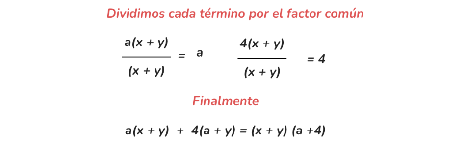
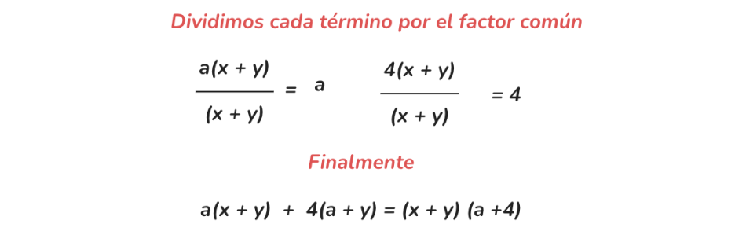
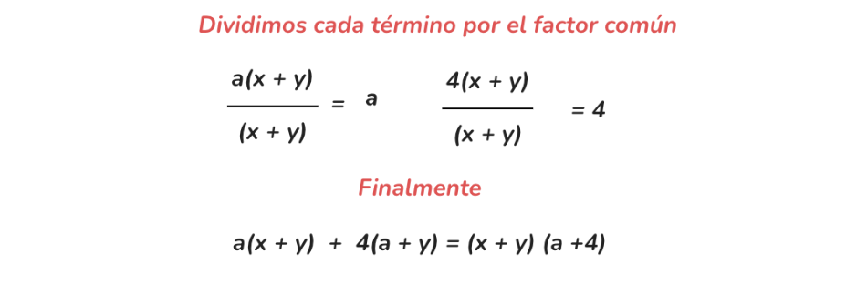

Este diario tiene como objetivo explorar diversos conceptos matemáticos, proporcionando ejemplos y explicaciones
que faciliten el aprendizaje y la comprensión de las matemáticas. Incluye definiciones, ejemplos y videos de
apoyo.
1. Productos Notables
Fundamento teórico:
Los productos notables son expresiones algebraicas que siguen reglas fijas y cuyos resultados pueden ser
obtenidos mediante fórmulas específicas, sin necesidad de realizar todos los pasos de multiplicación. Estos
incluyen el cuadrado de una suma, el cuadrado de una diferencia, el producto de una suma por una diferencia, entre
otros.
Ejemplo con aplicación:
Calcular (a + b)²
Aplicando la fórmula:
(a + b)² = a² + 2ab + b²
Esto simplifica el proceso y evita errores al multiplicar binomios.
Los productos notables son expresiones algebraicas que vienen de un producto que conocemos porque sigue reglas
fijas y cuyo resultado puede ser escrito por simple inspección, es decir, sin verificar la multiplicación. Estas
operaciones son fáciles de recordar sin necesidad de efectuar la multiplicación correspondiente.
Créditos: [Prof. Alex. Autor de video]
1.a Cuadrado de una Suma
Fundamento teórico:
El cuadrado de una suma es uno de los productos notables más utilizados en álgebra. Se refiere a la expansión de
una expresión de la forma (a + b)² y se expresa mediante la fórmula:
(a + b)² = a² + 2ab + b²
Esta fórmula indica que al cuadrar la suma de dos términos, el resultado es el cuadrado del primer término, más
el doble producto del primero por el segundo, más el cuadrado del segundo término.
Ejemplo con aplicación:
Calcular (5x + 7)²
Aplicamos la fórmula:
Cuadrado del primer término: (5x)² = 25x²
Doble producto del primero por el segundo: 2 * 5x * 7 = 70x
Cuadrado del segundo término: 7² = 49
Entonces, (5x + 7)² = 25x² + 70x + 49
Cuadrado de la Suma de dos Cantidades
Representamos gráficamente el cuadrado de la suma de dos cantidades positivas:
Ejemplo 1: (x + 10)²
Cuadrado del primer término: x²
Dos veces el primero por el segundo: 2(x)(10) = 20x
Cuadrado del segundo término: 10² = 100
Resultado: (x + 10)² = x² + 20x + 100
Ejemplo 2: (7a² + 5x³)²
Cuadrado del primer término: 49a⁴
Dos veces el primero por el segundo: 2(7a²)(5x³) = 70a²x³
Cuadrado del segundo término: 25x⁶
Resultado: (7a² + 5x³)² = 49a⁴ + 70a²x³ + 25x⁶
Video del tema:
Créditos: [Nombre del autor]
1.b Producto de una Suma por una Diferencia
Fundamento teórico:
El producto de una suma por una diferencia es otro producto notable que se utiliza para simplificar expresiones
de la forma (a + b)(a - b). La fórmula es:
(a + b)(a - b) = a² - b²
Esto significa que el producto resulta en la diferencia de los cuadrados de los términos.
Ejemplo con aplicación:
Calcular (x + 2)(x - 2)
Aplicamos la fórmula:
(x + 2)(x - 2) = x² - 2² = x² - 4
La suma por diferencia es una identidad algebraica que establece que el producto de dos binomios
conjugados (una suma y una resta de los mismos términos) es igual a la diferencia de sus cuadrados.
Para demostrar la fórmula, puedes expandir el producto de los binomios conjugados:
(a + b)(a - b) = a² - ab + ab - b² = a² - b²
Como los términos -ab y ab se cancelan, te queda:
a² - b²
Aplicaciones
Esta identidad es útil para simplificar expresiones algebraicas, factorizar polinomios y resolver ecuaciones. Es un
método eficaz para calcular el producto de binomios conjugados de manera rápida.
Video del tema:
Créditos: [Nombre del autor]
1.c Diferencia de Cubos
Fundamento teórico:
La diferencia de cubos es una identidad que permite factorizar expresiones de la forma a³ - b³. La fórmula es:
a³ - b³ = (a - b)(a² + ab + b²)
Esto facilita la factorización y simplificación de expresiones cúbicas.
Ejemplo con aplicación:
Factorizar x³ - 8
Observamos que 8 es 2³, entonces:
x³ - 2³ = (x - 2)(x² + 2x + 4)
Suma de dos cubos
Para resolver la suma de dos cubos, es necesario calcular primero la raíz cúbica de ambos términos, donde sus
resultados deben ser exactos para aplicar el siguiente procedimiento:
La suma de dos cubos es igual a la suma de sus raíces cúbicas por el producto del polinomio formado por el cuadrado
de la primera raíz menos el producto de ambas raíces más el cuadrado de la segunda raíz.
Fórmula: (a + b)(a² - ab + b²)
Ejemplo de suma de dos cubos:
Factorizar: x³ + 27
Raíces cúbicas: a = x, b = 3.
Fórmula: (x + 3)(x² - 3x + 9)
Diferencia de dos cubos
Al igual que en la suma de dos cubos, las raíces cúbicas de los términos que conforman la diferencia deben ser
exactas para aplicar el procedimiento:
La diferencia de dos cubos es igual a la diferencia de sus raíces cúbicas por el polinomio formado por el cuadrado
de la primera raíz más el producto de ambas raíces más el cuadrado de la segunda raíz.
Selecciona un subtema para ver más ejemplos y explicaciones.
2.a Factor Común
Fundamento teórico:
El factor común es un número o expresión que se puede extraer de varios términos. Es el
primer caso de factorización y consiste en identificar y extraer el mayor factor común de todos los términos de
una expresión algebraica.
Ejemplo con aplicación:
Factorizar la expresión: 12x³y + 18x²y² - 24xy³
Paso 1: Identificar el factor común.
Coeficientes: MCD de 12, 18 y -24 es 6.
Variables: Menor exponente de x es 1, y de y es 1.
El factor común es 6xy.
Paso 2: Dividir cada término por el factor común.
12x³y ÷ 6xy = 2x²
18x²y² ÷ 6xy = 3xy
-24xy³ ÷ 6xy = -4y²
Expresión factorizada:
12x³y + 18x²y² - 24xy³ = 6xy(2x² + 3xy - 4y²)
Imagen visual
Video del tema:
Créditos: [Nombre del autor]
Factor Común por Agrupación
Fundamento teórico:
El factor común por agrupación se utiliza cuando no todos los términos de un
polinomio tienen un factor común, pero sí se pueden agrupar en términos que sí lo tienen. Se agrupan los términos
de manera que se pueda extraer un factor común de cada grupo. h2>Factor Común por Agrupación de Términos
Se llama factor común por agrupación de términos si los términos de un polinomio pueden reunirse en grupos de
términos con un factor común diferente en cada grupo.
Cuando pueden reunirse en grupos de igual número de términos, se le saca en cada uno de ellos el factor común. Si
queda la misma expresión en cada uno de los grupos entre paréntesis, se la saca este grupo como factor común,
quedando así una multiplicación de polinomios.
Ejemplo:
Dado el polinomio:
2ax + 2bx - ay + 5a - by + 5b
Agrupamos los términos que tienen un factor común:
(2ax - ay + 5a) + (2bx - by + 5b)
Sacamos el factor común de cada grupo:
a(2x - y + 5) + b(2x - y + 5)
Como las expresiones encerradas entre paréntesis son iguales, se tiene:
Paso 3: Factor común entre los dos términos resultantes.
(a + b)(x + y)
Imagen visual

Video del tema:
Créditos: [Nombre del autor]
2.c Trinomios
Fundamento teórico:
Los trinomios son expresiones algebraicas con tres términos. Existen diferentes
tipos, como trinomios cuadrados perfectos y trinomios de la forma ax² + bx + c. La factorización de trinomios es
esencial para resolver ecuaciones cuadráticas.
Métodos para Factorizar Trinomios
Existen diferentes métodos para factorizar trinomios:
Factorización Simple: Se buscan dos números que multiplicados den 'ac' y sumados den 'b'.
Completación de Cuadrados: Transformar el trinomio en un cuadrado perfecto.
Fórmula General: Utilizar la fórmula cuadrática para encontrar las raíces.
Ejemplo con aplicación:
Factorizar x² + 5x + 6
Paso 1: Encontrar dos números que multiplicados den 6 y sumados den 5. Los números son 2 y 3.
Paso 2: Expresar el trinomio como producto de binomios.
(x + 2)(x + 3)
Imagen visual
Video del tema:
Créditos: [Nombre del autor]
2.d Diferencia de Cuadrados
Fundamento teórico:
La diferencia de cuadrados es una identidad notable que permite factorizar expresiones de la forma a² - b² = (a +
b)(a - b). Es útil para simplificar expresiones y resolver ecuaciones.
Ejemplo con aplicación:
Factorizar x² - 9
Observamos que 9 es 3², entonces:
x² - 3² = (x + 3)(x - 3)
Una diferencia de cuadrados es el resultado del producto de dos binomios conjugados.
Esto implica que, para factorizar una diferencia de cuadrados, se extraen las raíces cuadradas de los términos y se
forma un binomio. Finalmente, se expresa el producto de este binomio por su conjugado.
Ejemplos
Ejemplo 1:
Se extraen las raíces de los términos: Raíces: √a y √b
Se forma el binomio: (√a - √b) y se multiplica por su conjugado: (√a + √b), por lo que:
(√a - √b)(√a + √b)
Ejemplo 2:
Las raíces de los términos son: Raíces: √c y √d
Se forma el binomio: (√c - √d) y se multiplica por su conjugado: (√c + √d), así que: (√c
- √d)(√c + √d)
Conclusión
Una diferencia de los cuadrados de dos términos algebraicos se factoriza como el producto de dos binomios
conjugados, cuyos términos son las raíces cuadradas de los que están elevados al cuadrado.
Imagen visual
Video del tema:
Créditos: [Nombre del autor]
2.e Suma y Diferencia de Cubos Perfectos
Fundamento teórico:
Las identidades de suma y diferencia de cubos permiten factorizar expresiones cúbicas:
Suma de cubos: a³ + b³ = (a + b)(a² - ab + b²)
Diferencia de cubos: a³ - b³ = (a - b)(a² + ab + b²)
Ejemplo con aplicación:
Factorizar x³ + 27
Observamos que 27 es 3³, entonces:
x³ + 3³ = (x + 3)(x² - 3x + 9)
Imagen visual
Video del tema:
Créditos: [Nombre del autor]
3. Ecuaciones Lineales
Fundamento teórico:
Las ecuaciones lineales son ecuaciones de primer grado que se representan en la forma ax + b = 0. Su solución
implica encontrar el valor de x que satisface la igualdad.
Ejemplo con aplicación:
Resolver 2x + 4 = 0
Solución:
2x + 4 = 0
2x = -4
x = -2
Imagen visual
Video del tema:
Créditos: [Nombre del autor]
4. Resolución de Ecuaciones Cuadráticas
Fundamento teórico:
Las ecuaciones cuadráticas tienen la forma ax² + bx + c = 0 y pueden resolverse mediante varios métodos:
4.a Completación de Cuadrados
Fundamento teórico:
Este método consiste en transformar una ecuación cuadrática en un trinomio cuadrado perfecto para facilitar su
resolución.
Ejemplo con aplicación:
Resolver x² + 6x + 5 = 0
Paso 1: Mover el término constante al otro lado:
x² + 6x = -5
Paso 2: Completar el cuadrado sumando (b/2)² a ambos lados:
(6/2)² = 9
x² + 6x + 9 = -5 + 9
x² + 6x + 9 = 4
Paso 3: Escribir como cuadrado perfecto:
(x + 3)² = 4
Paso 4: Resolver para x:
x + 3 = ±2
x = -1, x = -5
Video del tema:
Créditos: [Nombre del autor]
4.b Fórmula Cuadrática
Fundamento teórico:
La fórmula cuadrática permite encontrar las soluciones de cualquier ecuación cuadrática:
Fórmula: x = [-b ± √(b² - 4ac)] / (2a)
Ejemplo con aplicación:
Resolver 2x² - 4x - 6 = 0
Paso 1: Identificar a, b y c:
a = 2, b = -4, c = -6
Paso 2: Sustituir en la fórmula:
x = [-(-4) ± √((-4)² - 4 * 2 * (-6))] / (2 * 2)
x = [4 ± √(16 + 48)] / 4
x = [4 ± √64] / 4
x = [4 ± 8] / 4
Soluciones:
x₁ = (4 + 8) / 4 = 12 / 4 = 3
x₂ = (4 - 8) / 4 = (-4) / 4 = -1
Video del tema:
Créditos: [Nombre del autor]
5. Círculo Unitario
Fundamento teórico:
El círculo unitario es un círculo con centro en el origen (0,0) y radio 1. Es fundamental en trigonometría para
definir las funciones seno y coseno en términos de coordenadas en el plano. El círculo unitario es utilizado en
matemáticas para relacionar a las funciones trigonométricas básicas en una manera más fácil. Dado que el radio del
círculo unitario es 1, esto facilita la aplicación del teorema de Pitágoras y resulta en que las coordenadas en x
sean equivalentes al coseno y las coordenadas en y sean equivalentes al seno.
Ejemplo con aplicación:
En el círculo unitario, el punto correspondiente a un ángulo de 45° tiene coordenadas (√2/2, √2/2).
Imagen visual
Fórmula para el Círculo Unitario
La ecuación de un círculo está dada por la forma general:
(x - h)2 + (y - k)2 = r2
donde (h, k) son las coordenadas del centro del círculo y r es el radio.
Entonces,
Fórmula para el Círculo Unitario
(x, y) representan a los puntos en el círculo que se ubican a una distancia r
desde el centro.
En el caso del círculo unitario, el centro está ubicado en (0, 0) y el radio es
1. Esto significa que la fórmula del círculo unitario es:
x2 + y2 = 1
Video del tema
Créditos: [Nombre del autor, autodidacta]
6. Medida de Ángulos
Fundamento teórico:
Los ángulos pueden medirse en grados y radianes. Un círculo completo tiene 360 grados o 2π radianes. Un grado
sexagesimal es la amplitud del ángulo resultante de dividir la circunferencia en 360 partes iguales. Aplicando
el sistema sexagesimal se tiene que 1 grado sexagesimal es igual a 60 minutos y 1 minuto es igual a 60 segundos De
lo anterior se sigue que 1 grado = 3600´´
Ángulos
Los ángulos se suelen medir en grados o en radianes. En el caso de la medición en grados, su valor oscila entre
0 y 360 grados (y los valores en 0 y 360 grados coinciden). Para referirnos a ellos, podemos escribir 90 grados, o
lo que es lo mismo, 90º.
Video de YouTube
6.a Medida en Radianes
Fundamento teórico:
Un radián es la medida del ángulo central que subtiende un arco igual en longitud al radio del círculo.
Ejemplo con aplicación:
180° = π radianes
Por lo tanto, un ángulo de 90° es π/2 radianes.
Medida de Radianes
La medida del ángulo en un círculo donde la longitud del arco es igual al radio.
¿Qué son los Radianes?
Hasta ahora, hemos utilizado grados para medir ángulos. Un grado es 1/360 de una rotación completa alrededor de un
círculo. Los radianes son unidades alternas utilizadas para medir ángulos en trigonometría.
Un radian (rad abreviado) es el ángulo creado al doblar la longitud del radio alrededor del arco de un círculo. Por
tanto, se necesita un poco más de 6 radianes para completar una rotación, ya que una rotación completa (360 grados)
equivale a 2π radianes, aproximadamente 6.28 radianes.
Conversión de Grados a Radianes
360 grados = 2π radianes
180 grados = π radianes
90 grados = π/2 radianes
Ángulos Cuadránticos
Extendiendo la medida del radián más allá del primer cuadrante, los ángulos cuadránticos son los siguientes:
270 grados = 3π/2 radianes
Video del tema:
Créditos: [Nombre del autor]
6.b Relación entre Radianes y Grados
Fundamento teórico:
La conversión entre radianes y grados se realiza mediante la proporción: 180° = π radianes.
Ejemplo con aplicación:
Convertir 60° a radianes:
60° * (π rad / 180°) = π/3 radianes
Relación entre Grados y Radianes
Los radianes y los grados son dos unidades de medida para ángulos. La relación entre ellos se puede entender a
través de la fórmula de la longitud del arco.
Fórmula de la Longitud del Arco
La longitud del arco (l) en un círculo de radio (r) y ángulo (θ) en radianes es:
Un círculo completo tiene una circunferencia de 2πr y un ángulo de 360º. Usando la fórmula de la
longitud del arco, podemos demostrar que:
Factor de Conversión
Los factores de conversión entre grados y radianes son:
1 radian ≈ 57.2958 grados
1 grado = π/180 radianes
Video del tema:
Créditos: [Nombre del autor]
7. Trigonometría de Triángulos Rectángulos
Fundamento teórico:
La trigonometría de triángulos rectángulos se basa en las razones trigonométricas y el Teorema de Pitágoras para
resolver problemas relacionados con ángulos y lados.
En esta sección, podrá:
Utilizar los triángulos rectángulos para evaluar las funciones trigonométricas.
Hallar los valores de la función para 30° (π/6), 45° (π/4) y 60° (π/3).
Utilizar cofunciones de ángulos complementarios.
Utilizar las definiciones de las funciones trigonométricas de cualquier ángulo.
Utilizar la trigonometría del triángulo rectángulo para resolver problemas aplicados.
Anteriomente hemos definido el seno y el coseno de un ángulo en términos de las coordenadas de un punto del círculo
unitario intersecado por el lado terminal del ángulo:
cos(t) = x sen(t) = y
En esta sección, veremos otra forma de definir las funciones trigonométricas mediante las propiedades de los
triángulos rectángulos.
Usar Triángulos Rectángulos para Evaluar Funciones Trigonométricas
En secciones anteriores, hemos utilizado un círculo unitario para definir las funciones trigonométricas. En esta
sección, ampliaremos esas definiciones para aplicarlas a los triángulos rectángulos. El valor de la función seno o
coseno de t es su valor en t radianes. En primer lugar, tenemos que crear nuestro
triángulo rectángulo. La Figura 1 muestra un punto en un círculo unitario de radio 1. Si dejamos caer un segmento de
línea vertical desde el punto (x,y) al eje x, tenemos un triángulo rectángulo cuyo lado vertical tiene longitud
y y cuyo lado horizontal tiene una longitud x.
Podemos utilizar este triángulo rectángulo para redefinir el seno, el coseno y las demás funciones trigonométricas
como cocientes de los lados de un triángulo rectángulo. Ver
imagen.
Estas relaciones se siguen aplicando a los lados de un triángulo rectángulo cuando no hay ningún círculo unitario y
cuando el triángulo no está en posición estándar y no se grafica con las coordenadas (x,y). Para utilizar estas
relaciones libremente, daremos a los lados designaciones más genéricas: En lugar de x, llamaremos
lado adyacente al ángulo al lado del ángulo dado t. (Adyacente significa “junto a”). En lugar de
y, llamaremos lado opuesto al ángulo dado al lado más distante del ángulo t.
Finalmente, en lugar de 1, llamaremos hipotenusa al lado de un triángulo rectángulo opuesto al
ángulo recto. Estos lados están marcados en la Figura
2.
7.a Razones Trigonométricas
Fundamento teórico:
Las razones trigonométricas relacionan los ángulos con los lados de un triángulo rectángulo:
Seno (sin): cateto opuesto / hipotenusa
Coseno (cos): cateto adyacente / hipotenusa
Tangente (tan): cateto opuesto / cateto adyacente
Ejemplo con aplicación:
En un triángulo rectángulo, si el ángulo θ es tal que sin θ = 0.6 y la hipotenusa es 10 cm, entonces el cateto
opuesto es:
cateto opuesto = sin θ * hipotenusa = 0.6 * 10 = 6 cm
Imagen visual
alt="Razones trigonométricas en triángulo rectángulo">
En un triángulo rectángulo, las razones trigonométricas fundamentales son el seno, el coseno y la tangente. Estas
razones se definen de la siguiente manera:
Seno
El seno del ángulo B es la razón entre el cateto opuesto al ángulo y la hipotenusa. Se denota por sen
B.
Coseno
El coseno del ángulo B es la razón entre el cateto adyacente o contiguo al ángulo y la hipotenusa. Se denota por
cos B.
Tangente
La tangente del ángulo B es la razón entre el cateto opuesto y el cateto adyacente. Se denota por tan
B.
Tangente
La tangente del ángulo B es la razón entre el cateto opuesto al ángulo y el cateto adyacente al ángulo. Se denota
por tan B o tg B.
Cosecante
La cosecante del ángulo B es la razón inversa del seno de B. Se denota por csc B o cosec
B.
Cotangente
La cotangente del ángulo B es la razón inversa de la tangente de B. Se denota por cot B o
ctg B.
Acrónimos y Definiciones
Acrónimo
Descripción verbal
Definición matemáticas
SOH
Seno es Opuesto sobre Hipotenusa
sen α = opuesto / hipotenusa
CAH
Coseno es Adyacente sobre Hipotenusa
cos α = adyacente / hipotenusa
TOA
Tangente es Opuesto sobre Adyacente
tan α = opuesto / adyacente
Video del tema:
Créditos: [Nombre del autor]
7.b Teorema de Pitágoras
Fundamento teórico:
En un triángulo rectángulo, el cuadrado de la hipotenusa es igual a la suma de los cuadrados de los catetos:
Fórmula: a² + b² = c²
Ejemplo con aplicación:
Si un triángulo tiene catetos de 3 cm y 4 cm, la hipotenusa es:
c = √(3² + 4²) = √(9 + 16) = √25 = 5 cm
Imagen visual
Sea un triángulo rectángulo de catetos a y b e hipotenusa h (el
lado opuesto al ángulo recto). Entonces, el cuadrado de la hipotenusa es igual a la suma de los cuadrados de los
catetos:
Recordemos que:
El triángulo es rectángulo porque tiene un ángulo recto, es decir, un ángulo de 90 grados ó π/2 radianes.
La hipotenusa es el lado opuesto al ángulo recto.
Las 3 últimas fórmulas anteriores se obtienen de la primera (haciendo la raíz cuadrada en ambos lados).
Nota: h siempre es mayor que los dos catetos, es decir, h > a y h
> b.
Curiosidades:
El teorema de Pitágoras es uno de los resultados más conocidos de las matemáticas y también uno de los más
antiguos. Existen cientos de demostraciones del mismo.
La pirámide de Kefrén (siglo XXVI a. C.) fue construida en base al llamado triángulo sagrado egipcio, que es
el triángulo rectángulo de lados 3, 4 y 5.
La comprensión del teorema es sencilla y tiene muchas aplicaciones en la vida cotidiana, como veremos en los
problemas de esta página. No obstante, también tiene sus aplicaciones en las matemáticas avanzadas.
Video del tema:
Créditos: [Nombre del autor]
8. Ley de Senos
Fundamento teórico:
La Ley de Senos establece una relación entre los lados y los ángulos opuestos de un triángulo cualquiera. Se
utiliza para resolver triángulos oblicuángulos, es decir, que no son rectángulos.
Fórmula:
a / sin A = b / sin B = c / sin C
Ejemplo con aplicación:
Dado un triángulo donde:
a = 10 cm
A = 30°
B = 45°
Calcular el lado b.
Aplicamos la Ley de Senos:
b = (a * sin B) / sin A
b = (10 * sin 45°) / sin 30°
b ≈ (10 * 0.7071) / 0.5 ≈ 14.14 cm
La ley de los senos es la relación entre los lados y ángulos de triángulos no rectángulos (oblicuos). Simplemente,
establece que la relación de la longitud de un lado de un triángulo al seno del ángulo opuesto a ese lado es igual
para todos los lados y ángulos en un triángulo dado.
En ∆ABC es un triángulo oblicuo con lados a, b y c, entonces:
Para usar la ley de los senos necesita conocer ya sea dos ángulos y un lado del triángulo (AAL o ALA) o dos lados y
un ángulo opuesto de uno de ellos (LLA). Dese cuenta que para el primero de los dos casos usamos las mismas partes
que utilizó para probar la congruencia de triángulos en geometría, pero en el segundo caso no podríamos probar los
triángulos congruentes dadas esas partes. Esto es llamado el caso ambiguo y lo discutiremos más adelante.
Ejemplo 1: Dado dos ángulos y un lado no incluído (AAL)
Dado ∆ABC con A = 30°, B = 20° y a = 45 m. Encuentre el ángulo y los lados faltantes.
El tercer ángulo del triángulo es:
C = 180° – A – B = 180° – 30° – 20° = 130°
Por la ley de los senos:
Por las propiedades de las proporciones:
Ejemplo 2: Dado dos ángulos y un lado incluído (ALA)
Dado A = 42°, B = 75° y c = 22 cm. Encuentre el ángulo y los lados faltantes.
El tercer ángulo del triángulo es:
C = 180° – A – B = 180° – 42° – 75° = 63°
Por la ley de los senos:
Por las propiedades de las proporciones:
El Caso Ambiguo
Si dos lados y un ángulo opuesto a uno de ellos son dados, tres posibilidades pueden ocurrir:
No existe tal triángulo.
Dos triángulos diferentes existen.
Exactamente un triángulo existe.
Considere un triángulo en el cual se le da a, b y A. (La altitud
h del vértice B al lado es igual a b sin A.)
1. No existe tal triángulo
Si A es agudo y a < h o A es obtuso y a ≤ b.
2. Dos triángulos diferentes existen
Si A es agudo y h < a < b.
3. Exactamente un triángulo existe
Video del tema:
Créditos: [Nombre del autor]
9. Ley de Cosenos
Fundamento teórico:
La Ley de Cosenos es una generalización del Teorema de Pitágoras que se aplica a cualquier tipo de triángulo.
Relaciona la longitud de un lado con los otros dos lados y el coseno del ángulo opuesto al primer lado.
Fórmula:
c² = a² + b² - 2ab * cos C
Ejemplo con aplicación:
Dado un triángulo con:
a = 5 cm
b = 7 cm
Ángulo C = 60°
Calcular el lado c.
Aplicamos la Ley de Cosenos:
c² = 5² + 7² - 2 * 5 * 7 * cos 60°
c² = 25 + 49 - 70 * 0.5
c² = 74 - 35
c² = 39
c = √39 ≈ 6.24 cm
La Ley de los Cosenos
La ley de los cosenos es usada para encontrar las partes faltantes de un triángulo oblicuo (no rectángulo) cuando
ya sea las medidas de dos lados y la medida del ángulo incluído son conocidas (LAL) o las longitudes de los tres
lados (LLL) son conocidas. En cualquiera de estos casos, es imposible usar la ley de los senos porque no podemos
establecer una proporción que pueda resolverse.
Fórmula
La ley de los cosenos establece:
c² = a² + b² – 2ab cos C
Esto se parece al teorema de Pitágoras, excepto que para el tercer término, y si C es un ángulo recto, el tercer
término es igual a 0 porque el coseno de 90° es 0, y se obtiene el teorema de Pitágoras. Así, el teorema de
Pitágoras es un caso especial de la ley de los cosenos.
Otras Formas
La ley de los cosenos también puede establecerse como:
b² = a² + c² – 2ac cos B
a² = b² + c² – 2bc cos A
Ejemplo 1: Dos lados y el ángulo incluído (LAL)
Dado a = 11, b = 5 y C = 20°. Encuentre el lado y ángulos
faltantes.
Para encontrar los ángulos faltantes, ahora es más fácil usar la ley de los senos.
Ejemplo 2: Tres lados (LLL)
Dado a = 8, b = 19 y c = 14. Encuentre las medidas de los
ángulos.
Es mejor encontrar el ángulo opuesto al lado más grande primero. En este caso, ese es el lado b.
Video del tema:
Créditos: [Nombre del autor]
10. Bibliografía
A continuación, se listan los videos y recursos utilizados en este manual:
Video sobre Productos Notables - Autor: [Nombre del autor]
Video sobre Factorización - Autor: [Nombre del autor]
Video sobre Ecuaciones Lineales - Autor: [Nombre del autor]
Video sobre Ecuaciones Cuadráticas - Autor: [Nombre del autor]
Video sobre Círculo Unitario - Autor: [Nombre del autor]
Video sobre Medida de Ángulos - Autor: [Nombre del autor]
Video sobre Trigonometría de Triángulos Rectángulos - Autor: [Nombre del autor]
Video sobre Ley de Senos y Cosenos - Autor: [Nombre del autor]


 
